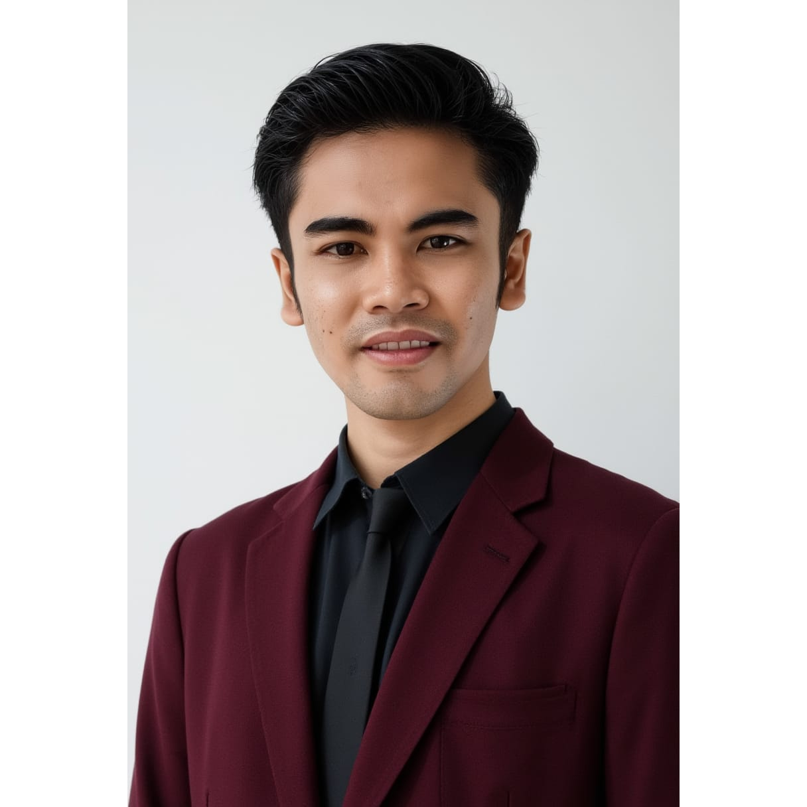
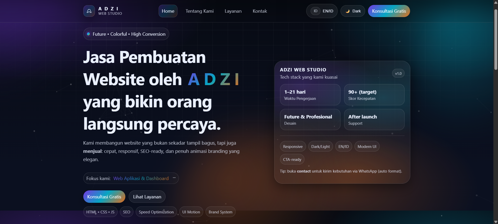
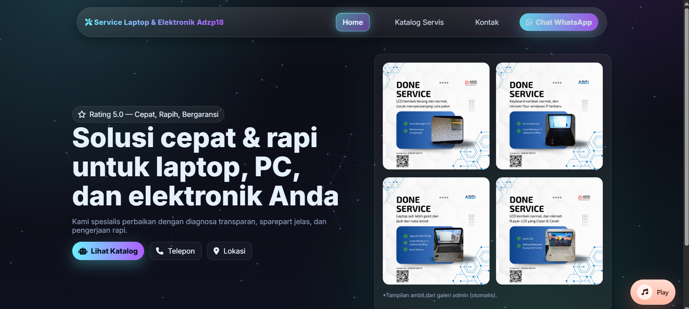
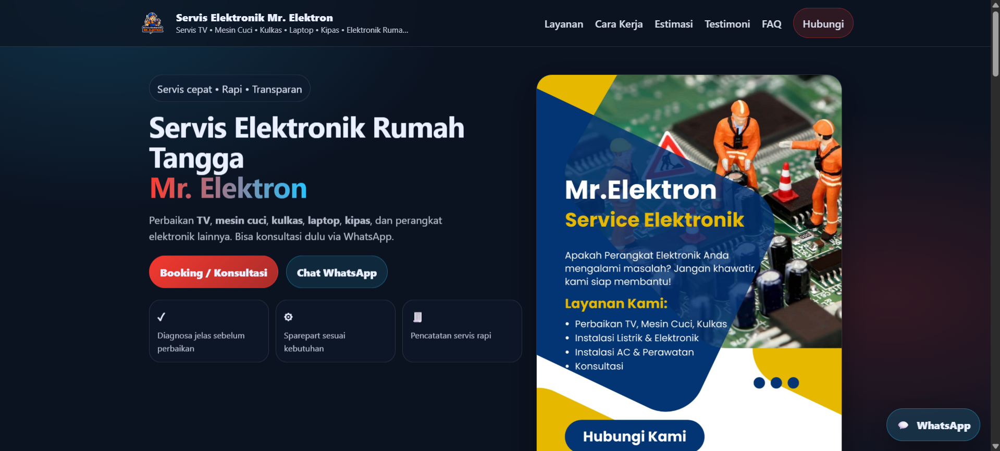
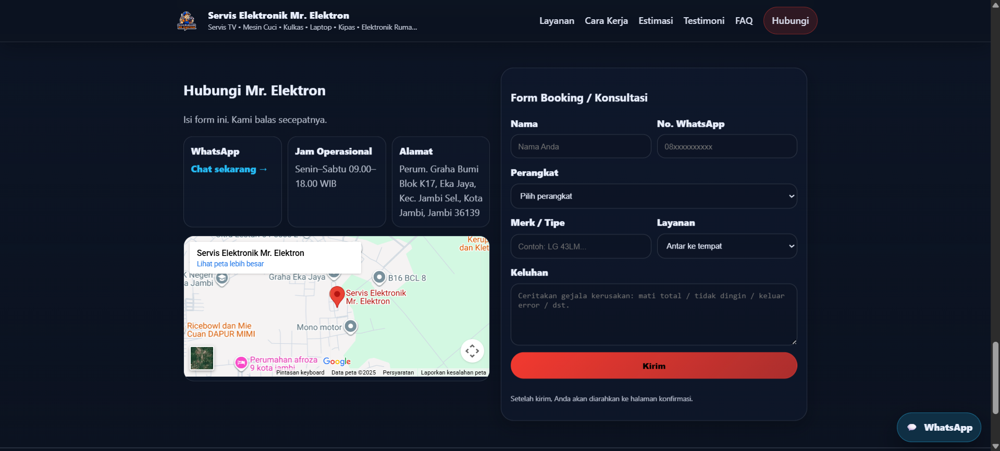

ADZI
PURNOMO
IT Programmer &
System Support Engineer
Code - Support - Solve - Improve
- @adzipurnomo18
- github.com/Adzipurnomo18
- Lampung, Indonesia

Adzi Purnomo
PORTFOLIO BOOK
TENTANG
SAYA
Saya adalah seorang IT Programmer dan System Support Engineer yang berpengalaman dalam pengembangan sistem informasi, pemeliharaan sistem, serta troubleshooting infrastruktur IT.
Saya memiliki semangat belajar tinggi, menyukai tantangan baru, serta selalu berkomitmen memberikan solusi terbaik melalui teknologi.
Technology is best when it brings people together.02
- Adzi Purnomo
INFO PERSONAL
- Nama
- Adzi Purnomo
- Tanggal Lahir
- 18 Agustus 1998
- Lokasi
- Lampung, Indonesia
- adzipurnomo18@gmail.com
- No. Telp
- 0852-6760-8808
PENGALAMAN
KERJA
PT Surya Pratama Kurniamindo
IT Programmer - System Support
2022 - Sekarang- Mengembangkan dan memelihara sistem informasi perusahaan.
- Melakukan analisis kebutuhan sistem dan implementasi solusi.
- Troubleshooting aplikasi dan jaringan.
- Berkoordinasi dengan tim dalam pengembangan project.
PT Citotama
Teknisi Elektronik & IT Support
2020 - 2022- Melakukan perbaikan dan perawatan perangkat elektronik.
- Instalasi dan konfigurasi perangkat IT.
- Support pengguna dan maintenance infrastruktur.
- Menangani troubleshooting hardware dan software.
SISTEM YANG
DITANGANI
Sistem pengelolaan data dan proses distribusi barang secara terintegrasi.
Sistem manajemen sumber daya manusia meliputi absensi, payroll, dan laporan karyawan.
Sistem operasional internal perusahaan untuk mendukung proses bisnis sehari-hari.
PROJECT
PORTFOLIO 01
Personal Portfolio Website
Website personal untuk menampilkan profil, layanan, dan portfolio project.
Teknologi :
Link Project
adzipurnomo18.github.io
08
Layout Modern UI
Design Performance
Optimized
PROJECT
PORTFOLIO 02
Service Laptop & Elektronik
Website layanan perbaikan laptop, PC, dan elektronik dengan sistem booking online.
Teknologi :
Link Project
service-elektronik-adzi.vercel.app
10
Online Teknisi
Profesional Harga
Transparan Garansi
Service
PROJECT
PORTFOLIO 03
Mr. Elektron - Service Elektronik
Website layanan servis elektronik dengan informasi lengkap dan kontak WhatsApp.
Teknologi :
Link Project
mrelektron.vercel.app
12

13KEAHLIAN
(TECHNICAL SKILLS)
KEAHLIAN
(HARD & SOFT SKILLS)
HARD SKILLS
- Web Development
- System Support
- Database Management
- RESTful API
- Troubleshooting
- Linux Basic
SOFT SKILLS
- Problem Solving
- Teamwork
- Communication
- Time Management
- Adaptability
- Responsibility
PENDIDIKAN
Universitas Nurdin Hamzah
2017 - 2021
Teknik Komputer & Jaringan
2014 - 2017
KONTAK SAYA
- 0852-6760-8808
- adzipurnomo18@gmail.com
- Lampung, Indonesia
- github.com/Adzipurnomo18
- linkedin.com/in/adzipurnomo18
- @adzipurnomo18
SCAN ME
Scan QR untuk menyimpan kontak saya dengan mudah
21TERIMA KASIH
Sudah melihat portfolio saya.
Mari berkolaborasi dan membangun solusi terbaik bersama.
Adzi Purnomo
IT Programmer & System Support Engineer
● ● ● 22Adzi Purnomo
23